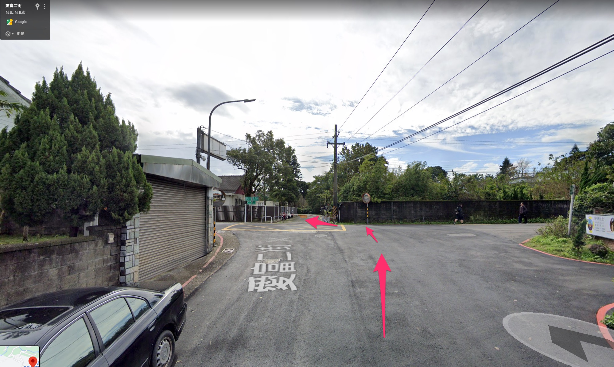
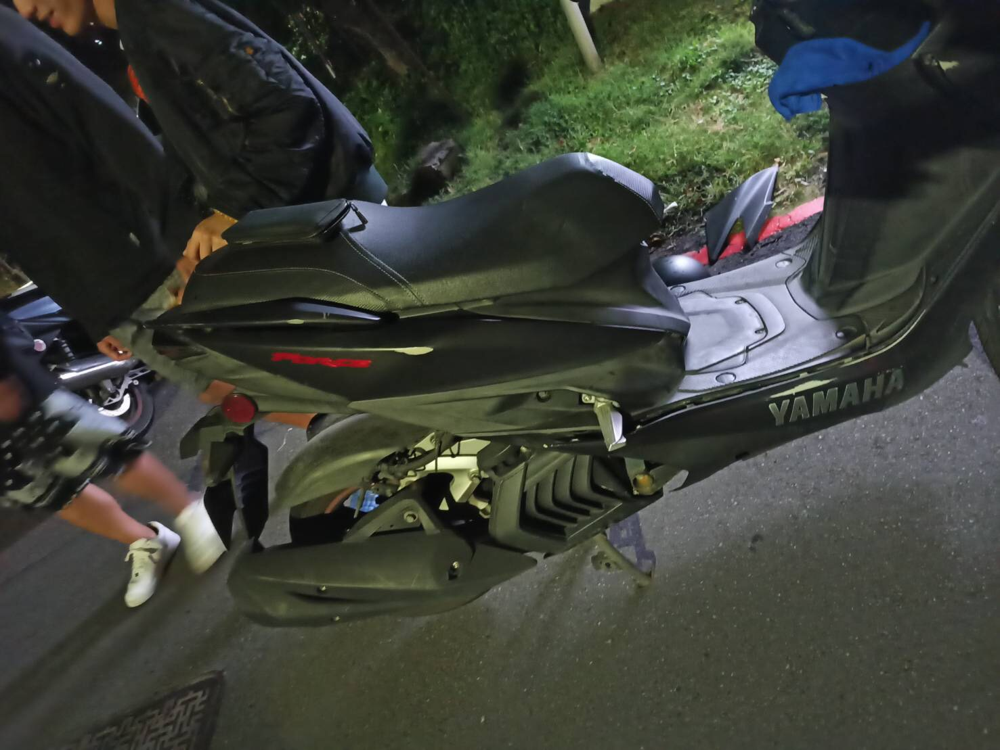
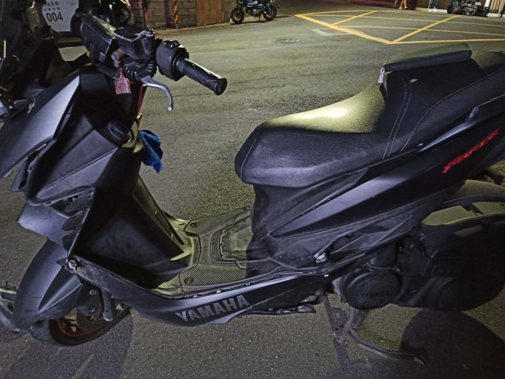
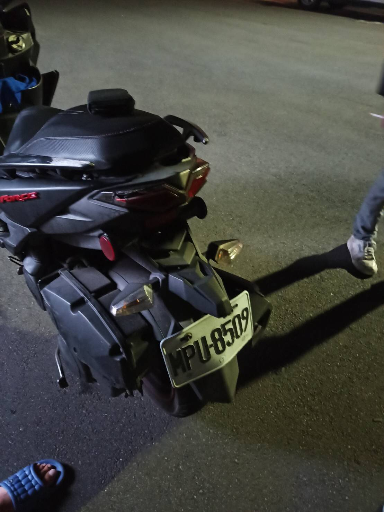
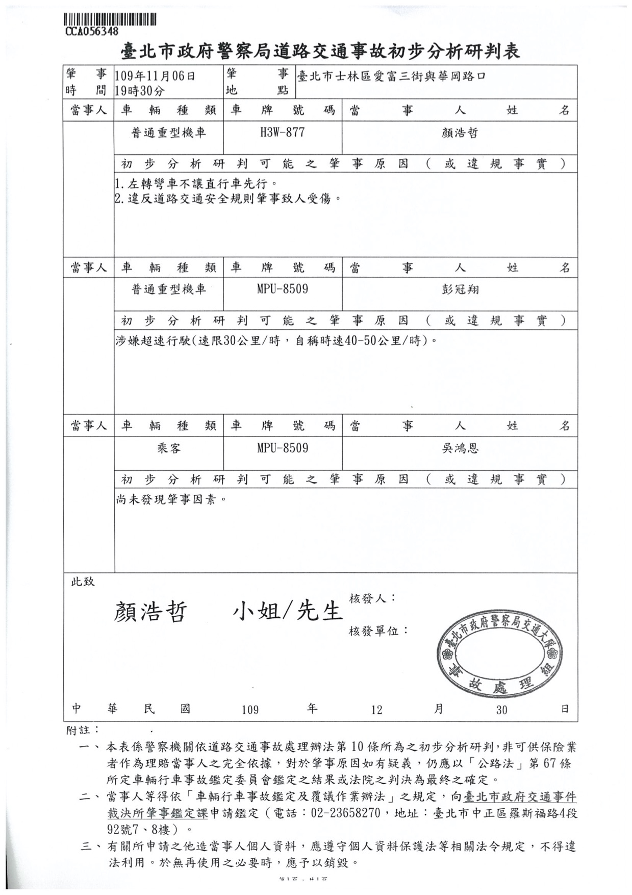

James車禍調解事宜
Table of Contents
1 登記資料
1.1 登記聯單
- 士林分局
- 單號 CCA056348
- 警員 蔡明佑 02-28881995
1.2 地點
愛富三街/華岡路口
1.3 雙方
1.3.1 我方
- 顏浩哲 0928109555
- 普通重機: H3W-877
1.3.2 對方
- 彭冠翔 0902191869
- 普通重機: MPU-8509
1.3.3 報案登記

Figure 1: 報案登記
2 事件陳述
我方騎騎機車行經路口，行至路中心準備左轉時遭對方自左方車道騎乘機車撞上（路口無號誌），以對方車頭、我方車側身損毀程度判斷，合理懷疑對方嚴重超速(路口速限30，對方聲稱車速為40~50)，且對方行至路口並未減速採取必要安全措施(該路段為學區、速限30、路口有「當心兒童」三角警示號誌)，我方則有轉彎車未禮讓直行車的問題。
3 現場狀況
2020年11月 6日晚 7:30分
肇事路口 路口無號誌、無待轉

- 我方行車視角

Figure 3: 我方行車視角
對方來車視角 路口速限30

4 我方車損狀況及估價
4.1 我方驗傷單

Figure 5: 驗傷單
4.2 我方車損

Figure 6: 車損
4.3 我方車損估價
約5000，估價單待補
5 對方車損狀況及估價
5.1 對方車損照片
Figure 7: 前

Figure 8: 右

Figure 9: 左

Figure 10: 後
5.2 對方維修估價單
| 品名 | 數量 | 單價 | 金額 |
|---|---|---|---|
| 車台 | 1組 | 12000 | |
| 車鏡遮陽皮前移 | 1組 | 8900 | |
| 後灯 | 1組 | 3900 | |
| 左拉桿 | 1支 | 1300 | |
| 三角台 | 1支 | 2500 | |
| 前避震器左、右 | 2支 | 4000 | |
| 前輪框 | 1個 | 3500 | |
| 前輪軸 | 1支 | 200 | |
| 前剎車碟 | 1個 | 1500 | |
| 前輪培林 | 1組 | 550 | |
| 遮陽板 | 1個 | 1200 | |
| 大灯? | 1個 | 1300 | |
| 大灯組 | 1個 | 2800 | |
| 前方灯組左、右 | 2組 | 550 | 1100 |
| 喇叭 | 1個 | 250 | |
| 內箱 | 1個 | 1200 | |
| 內箱上段 | 1個 | 350 | |
| 側邊條左、右 | 2條 | 850 | 1700 |
| 前土除 | 1個 | 900 | |
| 前內土除 | 1個 | 750 | |
| 後握把左、右 | 2支 | 900 | 1800 |
| 右側蓋 | 1個 | 1500 | |
| 左後腳踏 | 1支 | 400 | |
| 握把套左、右 | 1組 | 450 | |
| 合計 | 54050 |
5.3 對方工作損失
對方聲稱，機車為其打工(UberEat)生財工具，要求我方賠償此段時間之工作損失。 我方預計要求對方提供事發前三個月之薪資月結單。
6 初步分析研判表

Figure 11: 初判表
7 初步賠償金額計算
7.1 車輛維修費用計算
法律認為必須要對車禍損害負全責的肇事駕駛，所需要負的責任原則上是回復原狀，而回復原狀是指回復至車禍事故時的原狀。也就說，如果車禍時，車輛已經開了二年，要負責任的肇事駕駛必須要回復的是已經用了二年狀態的零件，但，去哪裡買了二年的零件？？因此，法律上關於車輛的維修費用，會以全新零件及工錢為基礎，針對零件部分，則會參考會計的原理原則，計算折舊，即把車子已經經過二年的的價值扣掉。
計算方式有「平均法」，或「定率遞減法」兩種，法官會衡量車子受損時的實際狀況，考量使用哪一種的折舊方法，但目前實務上，比較方便計算的折舊方法是「平均法」。
如果以機車【機械腳踏車】已經使用兩年，車行就零件部分收費10,000元，且以平均法來算者：
因行政院所頒固定資產耐用年數表及固定資產折舊率表，【機械腳踏車】之耐用年數為3年，依平均法計算其折舊結果（即以固定資產成本減除殘價後之餘額，按固定資產耐用年數表規定之耐用年數平均分攤，計算折舊額），每年折舊率為3 分之1，並參酌營利事業所得稅查核準則第95條第6項規定「固定資產提列折舊採用定率遞減法者，以1年為計算單位，其使用期間未滿1年者，按實際使用之月數相當於全年之比例計算之，不滿1月者，以1 月計」。
公式說明如下：
折舊額 ＝(取得成本－殘價)×1/（耐用年數）×（使用年數）
殘價＝取得成本÷( 耐用年數＋1)
車輛關於零件部分的修復費用，即新品價格扣除折舊額。司法院網站有提供實際試算服務: http://gdgt.judicial.gov.tw/judtool/wkc/GDGT02.htm
7.2 依行政院資產折舊率計算結果
初步假設對方為三年車，將對方估價單輸入網站後計算結果如下:
依行政院所頒固定資產耐用年數表及固定資產折舊率表，【機械腳踏車】之耐用年數為3年，依平均法計算其折舊結果（即以固定資產成本減除殘價後之餘額，按固定資產耐用年數表規定之耐用年數平均分攤，計算折舊額），每年折舊率為3 分之1 ，並參酌營利事業所得稅查核準則第95條第6 項規定「 固定資產提列折舊採用定率遞減法者，以1 年為計算單位，其使用期間未滿1 年者，按實際使用之月數相當於全年之比例計算之，不滿1月者，以1 月計」，上開【機械腳踏車】自出廠日OO年OO月，迄本件車禍發生時即OO年OO月OO日，已使用3年0月，則零件扣除折舊後之修復費用估定為12,500元【計算方式：1.殘價＝取得成本÷( 耐用年數＋1)即50,000÷(3+1)≒12,500（小數點以下四捨五入）；2.折舊額 ＝(取得成本－殘價)×1/（耐用年數）×（使用年數）即(50,000－12,500) ×1/3×（3+0/12）≒37,500（小數點以下四捨五入）；3.扣除折舊後價值＝（新品取得成本－折舊額）即50,000－37,500＝12,500】
7.3 肇責分攤處理原則 - 中華民國產物保險商業同業公會汽車險委員會編製
7.3.1 15.路口無號誌且無幹支道之分者，轉彎車與直行車肇責分攤情形。
- 轉彎車未讓直行車先行者，即未達中心線搶先左轉時，則轉彎車負100%肇責，直行車無肇責。
- 直行車路口未減速或超速時，則轉彎車負70%，直行車負30%。(互賠)
- 直行車未讓已轉彎車先行時，直行車負100%肇責。
8 責任區分
我方違反道路交通安全規則第102條第1項7款規定：「汽車行駛至交岔路口，其行進、轉彎，應依下列規定：七、轉彎車應讓直行車先行。」
對方違反下列相關規定:道路交通安全規則第93條第1項第2款 「行車速度，依速限標誌或標線之規定，無速限標誌或標線者，應遵循規定之第二項：行經設有彎道、坡路、狹路、狹橋、隧道、學校、醫院標誌之路段、道路施工路段、泥濘或積水道路、無號誌之交岔路口及其他人車擁擠處所，或因雨霧致視線不清或道路發生臨時障礙，均應減速慢行，作隨時停車之準備。」
對方直行車依規定雖有路權，但「路權」並非絕對不可侵犯之權利，是除有關路權之各項具體規範外，尚有明定駕駛人必須遵守注意車前狀況或兩車併行距離等相關概括規定之必要，且所謂車前狀況亦非僅以駕駛人所遵行之車道為限，尚須擴及視線所及之可能範圍，藉此賦予駕駛人在享有路權之同時，仍應確實注意周遭突發情事與他人行車狀況之義務，促使各類用路人均能妥適採取避免或降低交通往來風險之舉措。否則倘如本件雖因我方未禮讓直行車，若謂對方逕可不問兩車相距為何或是否確實注意他人行車狀況，徒憑其是時享有路權而率行主張卸免一切責任，實與上述交通安全規則之法律本意有悖。
9 問題
- 此案例中，合理的轉彎車與直行車肇責比例為何?
- 此案例中，我方合理的賠償金額為何?
- 此案例中，我方車損可要求對方賠償之合理金額為何？
- 此案例中，我方是否需要賠償對方之打工損失？若有，合理賠償比例為何？